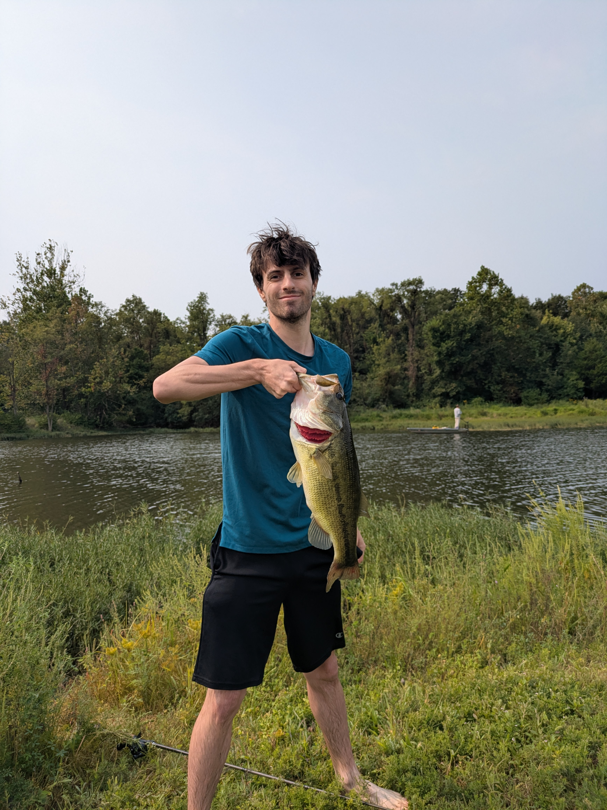

Professional Summary
I am an aspiring Software Developer and IT professional with a strong foundation in programming, database management, and systems analysis. During my internship at Motivation Technologies, my team developed an AI Podcast Generator prototype using Python and OpenAI APIs, gaining experience in API integration, data handling, and UI design. My background also includes roles that strengthened my communication and problem-solving skills, from client-facing service to technical teamwork. With experience in Python, Java, C++, SQL, and web development, I am eager to apply my skills to real-world projects and continue growing as a developer.

About Me
A little bit about me: I was born and raised in a small town near St. Louis, Missouri, called Arnold. Growing up, I traveled often, especially to Switzerland — where my dad was born and raised and where much of his side of the family still lives. My dad worked as a software developer, and I was always fascinated by his work. As a kid who loved playing games, it amazed me to see lines of code transform into real applications that could accomplish so much. I started coding myself in middle school using a block-based language called Scratch and had a blast creating simple projects. In high school, I was lucky enough to take newly offered coding classes in Python, where I enjoyed tackling fun but challenging exercises. One of my teachers even gave me a Raspberry Pi after noticing my enthusiasm, and I spent countless hours experimenting and building with it. Then in college, I was able to take on larger-scale coding projects. They were challenging at times, but I enjoyed the process and found the problem-solving aspect especially rewarding. Some of my favorite hobbies include game development (see an example on my Projects page), Raspberry Pi tinkering, fishing, hiking, cars, and playing sports.
